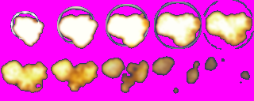

Advanced Game Programming Topics
Your own 2D Game Engine
SDL
The Simple DirectMedia Layer (SDL) is a cross-platform development library designed to provide low level access to audio, keyboard, mouse, joystick, and graphics hardware via OpenGL and Direct3D. SDL officially supports Windows, Mac OS X, Linux, iOS, and Android, which makes this library an excellent tool for creating games for several platforms. Given its great popularity among video game developers, the SDL is used by emulators and popular games, including Valve’s award-winning catalog and many Humble Bundle games.

The SDL library is written in C and works natively with C++. Moreover, the SDL 3.0 (latest version as of 2024) is distributed under the zlib license. This allows you to use it freely in any software.
Box2D
The Box2D is a 2D physics engine for games. Box2D is an open source C++ engine for simulating rigid bodies in 2D and, like SDL, is also cross-platform and distributed under the zlib license. It has been widely adopted: Nintendo DS, Wii, and several mobile phones (including Android BlackBerry 10 and iOS) as well as most major operating systems. Box2D is the 2D physics engine adopted by Unity and by other game engines, like: Construct 2, Stencyl, LibGDX, GameMaker: Studio, among others.

The current stable version is Box2D 3.0, which includes significant improvements in performance and features over previous versions.
Project
Using the SDL3 library, the Box2D 3.0 physics engine and the C++ programming language (C++17 or later specification), you should create a simple two-dimensional (2D) Game Engine supporting sprited tiled maps. The Game Engine should also have all the necessary features for creating a simple 2D Space shooter game: sprite sheet loading, color keying, 2D animations, 2D collision detection, keyboard and gamepad control, etc. Then, using the developed game engine, you should create a clone of the 2D Space shooter game Xenon 2000 (see: https://youtu.be/eMWRH_69Xo4).
Game Engine
The implemented Game Engine must follow the Object-Oriented paradigm: you should have Concrete Types for representing the SDL datatypes (SDL, SDL_Window, SDL_Texture, SDL_Renderer, SDL_Rect, etc.), all required exceptions and Class Hierarchies for representing all the necessary entities and assets for 2D Game development. Your game engine should be the most generic as possible, so it can be used for creating other kind of 2D games. Therefore, your Game Engine and the Xennon clone game should be created in separate XCode/Visual Studio Projects. The project corresponding to the Xennon clone game should include the game engine has an external library.
Resource Management
The resource management must be taken into account: every time an heap allocated resource is not required, it should be freed. You must avoid resource/memory leaks at all costs.
Game Loop
For the Game Loop inside your game engine, you must separate the game logic from the rendering. During each loop, first all the actors or game objects have their game logic updated (positions, etc.), and then all actors are rendered. For more information, please go to: https://docs.unity3d.com/560/Documentation/Manual/ExecutionOrder.html. Here, you have a short description of how the Unity1 Game Engine works.
Game: Xenon 2000 clone
For testing your Game Engine, you must use the assets of the Xenon 2000: Project PCF and create a very simple Xenon 2000 clone. Therefore, you will need to load the assets corresponding to the background, the Spaceship, missile and enemy’s sprite sheets.

As you can see in Figure 3, the magenta color (RGB: 255, 0, 255) corresponds to transparent, since the BMP format does not support alpha channel (transparency).
Spaceship
The Spaceship should move according to the keyboard or gamepad input. Also, when the ship is moving to the left, it must have the animation of turning to the left (see the first three tiles of Figure 2) and when is turning right, an animation of turning right (last three tiles of Figure 3).
Missiles
The Spaceship should also fire missiles when the player presses the Space bar on the keyboard, or the X button on the PlayStation controllers or the A button on the Xbox controllers. For the missiles: consider the first row of the “missile.bmp” sprite sheet:

Every time a missile collides with an enemy, the missile is destroyed and should happen an explosion. You must use the following sprite sheet for the explosion:

Loner
The Loner is an enemy and is represented by the following sprite sheet:

This enemy moves horizontally on the screen at a certain speed.
Enemy Projectiles
The enemy projectiles are fired by Loners and represented by the following sprite sheet:

Enemy projectiles also explode when they collide with the Spaceship.
Rusher
The rusher is also an enemy and is represent by the following spritesheet:

This enemy moves vertically on the screen at a certain speed.
Vertical Scroller
The game should be a vertical scroller (see reference) and have at least two background layers in order to achieve some sort of parallax effect.
Reference
You can use the following video as a reference for your implementation of the Xennon 2000 clone: https://youtu.be/eMWRH_69Xo4.
Report
Together with the project, there must be a report in PDF format with a description of the Game Engine, including a class diagram of the Game Engine, the description all the implemented algorithms and a justification of the choices made. The report shall site all references (books, websites, etc.) in which the algorithms were based. The report should also explicitly include the objectives achieved and not achieved.
Marks
This part of the project has the following marks:
| Criteria | Mark |
|---|---|
| Gamepad controllers support (Xbox and PlayStation) (engine) | 5% |
| Event Handling (engine) | 5% |
| Game Loop (engine) | 7.5% |
| Resource Management (engine) | 7.5% |
| Level (engine) | 7.5% |
| Actor/Game Object (engine) | 7.5% |
| Pawn or similar concept (engine) | 7.5% |
| Wrapper Classes for SDL 3 | 7.5% |
| Animation (engine) | 7.5% |
| Resource Management (game) | 7.5% |
| Spaceship (game) | 5% |
| Missiles (game) | 5% |
| Enemies (game) | 5% |
| Level (game) | 5% |
| Report | 10% |
Rules
The practical project must follow the following rules:
- Project delivery and presentation: 27th November 2025.
- The work can be performed by groups of two students (projects with groups larger than two, will not be accepted).
Department of Computer Science
Instituto Politécnico de Leiria
www.dei.estg.ipleiria.pt